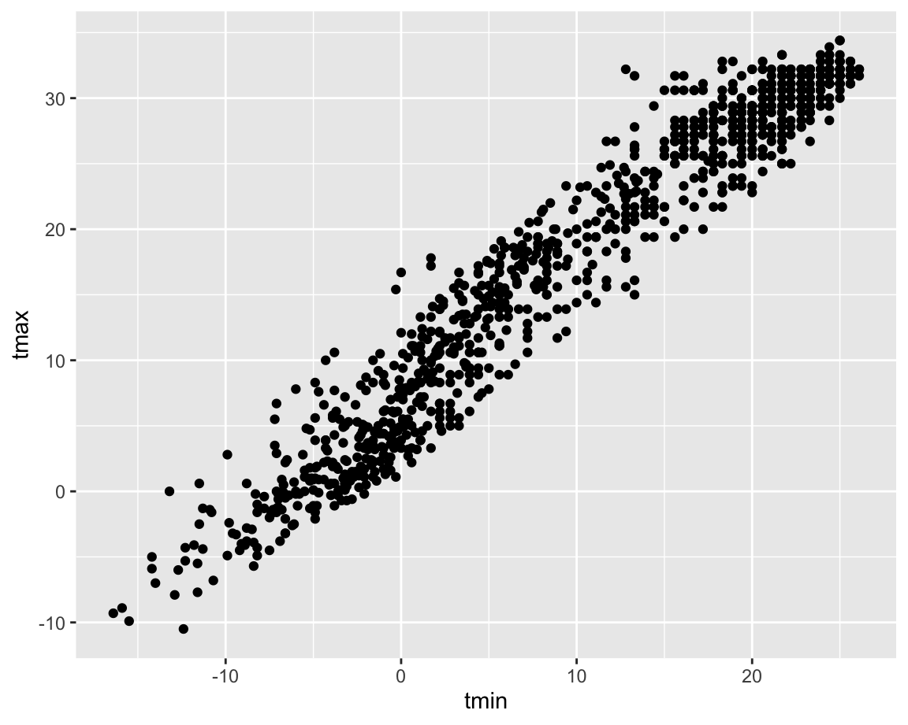
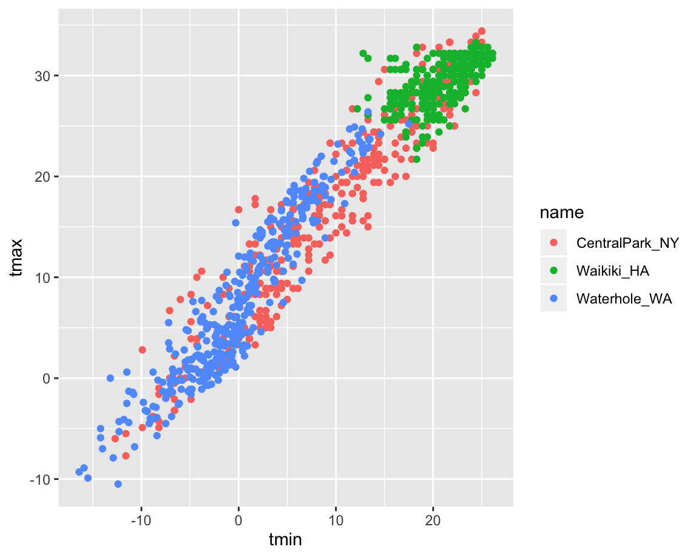

weather_df =
rnoaa::meteo_pull_monitors(c("USW00094728", "USC00519397", "USS0023B17S"),
var = c("PRCP", "TMIN", "TMAX"),
date_min = "2017-01-01",
date_max = "2017-12-31") %>%
mutate(
name = recode(id, USW00094728 = "CentralPark_NY",
USC00519397 = "Waikiki_HA",
USS0023B17S = "Waterhole_WA"),
tmin = tmin / 10,
tmax = tmax / 10) %>%
select(name, id, everything())## Registered S3 method overwritten by 'crul':
## method from
## as.character.form_file httr## Registered S3 method overwritten by 'hoardr':
## method from
## print.cache_info httr## file path: /Users/maryknoop/Library/Caches/rnoaa/ghcnd/USW00094728.dly## file last updated: 2019-10-03 10:19:13## file min/max dates: 1869-01-01 / 2019-09-30## file path: /Users/maryknoop/Library/Caches/rnoaa/ghcnd/USC00519397.dly## file last updated: 2019-10-03 10:19:29## file min/max dates: 1965-01-01 / 2019-09-30## file path: /Users/maryknoop/Library/Caches/rnoaa/ghcnd/USS0023B17S.dly## file last updated: 2019-10-03 10:19:35## file min/max dates: 1999-09-01 / 2019-09-30weather_df## # A tibble: 1,095 x 6
## name id date prcp tmax tmin
## <chr> <chr> <date> <dbl> <dbl> <dbl>
## 1 CentralPark_NY USW00094728 2017-01-01 0 8.9 4.4
## 2 CentralPark_NY USW00094728 2017-01-02 53 5 2.8
## 3 CentralPark_NY USW00094728 2017-01-03 147 6.1 3.9
## 4 CentralPark_NY USW00094728 2017-01-04 0 11.1 1.1
## 5 CentralPark_NY USW00094728 2017-01-05 0 1.1 -2.7
## 6 CentralPark_NY USW00094728 2017-01-06 13 0.6 -3.8
## 7 CentralPark_NY USW00094728 2017-01-07 81 -3.2 -6.6
## 8 CentralPark_NY USW00094728 2017-01-08 0 -3.8 -8.8
## 9 CentralPark_NY USW00094728 2017-01-09 0 -4.9 -9.9
## 10 CentralPark_NY USW00094728 2017-01-10 0 7.8 -6
## # … with 1,085 more rowsggplot(weather_df, aes(x = tmin, y = tmax)) +
geom_point()
